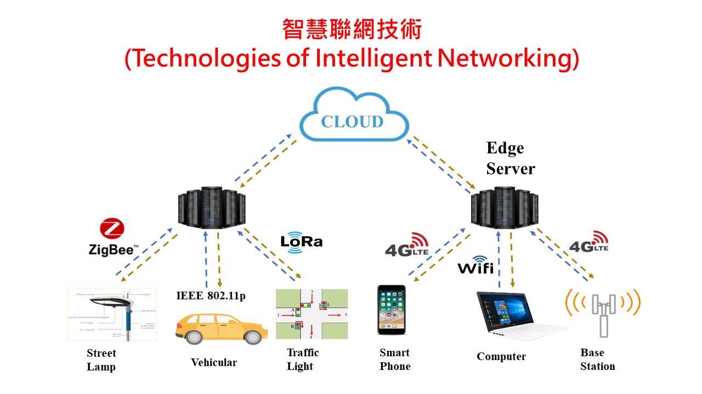
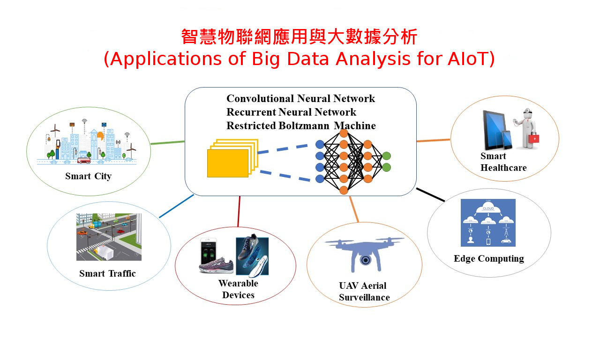
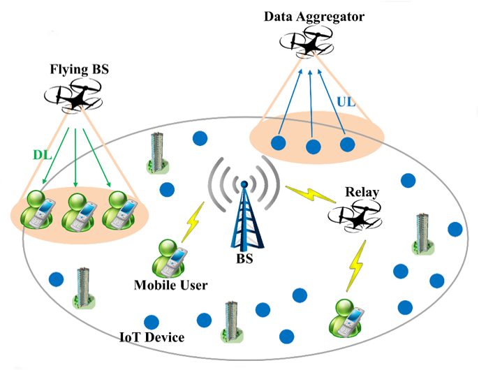
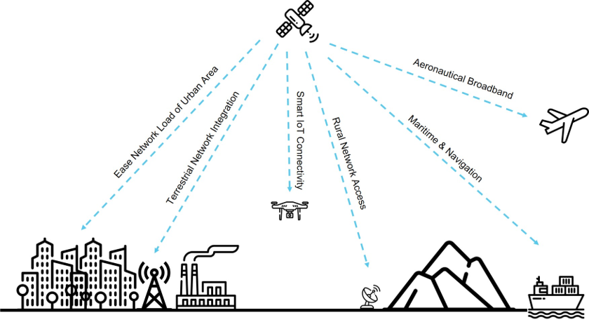

Research Area

- Wireless Communication Protocols for AIoT
- Power Consumption Optimization in AIoT
- D2D Communication for Emergency/Disaster Management
- Fog/Edge Resources Allocation
- Low-power Wide-area (LPWA) Networks

- Smart Campus and Smart Cities Applications
- Big Data Analysis in AIoT
- Big Data Processing with Fog Computing
- Industrial IoT Applications
Multi-UAV Networks and Applications(多無人機網路及其應用)
- UAV as a Flying Base-station
- UAV as a Relay Node
- UAV as a Mobile Sensor
- UAV as a Gateway Connection
- Optimization of the Deployment and Trajectory
- UAV Indoor/Outdoor Precise Positioning Methods
Beyond 5G Telecommunications(後5G通訊網路)
- Heterogeneous Networks Communications
- Low-orbit Satellite Communications
- Multi-connectivity Communications
- Small Cell Communications
- Device to Device Communications